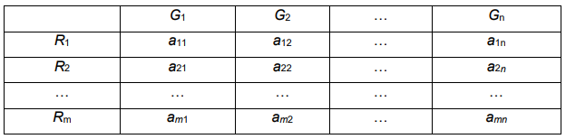

Методы линейного программирования применяют к практическим задачам, в которых:
Для практического решения экономической задачи математическими методами ее прежде всего следует записать с помощью математических выражений: уравнений, неравенств и тому подобное, то есть составить экономико-математическую модель. Исходя из отмеченных выше особенностей задач линейного программирования, можно наметить следующую общую схему формирования модели:
В общей постановке задача линейного программирования (ЗЛП) формулируется следующим образом.
Имеются какие-то переменные x = (x1, x2,…, xn) и линейная функция этих переменных, которая носит название целевой функции. Ставится задача: найти экстремум (максимум или минимум) целевой функции при условии, что переменные x удовлетворяют системе линейных равенств и/или неравенств. Классическими примерами практических задач, сводящихся к задаче линейного программирования, являются задача о диете, а также заача о составлении плана производства.
В задаче о диете составляется наиболее экономный (т.е. наиболее дешевый) рацион питания животных, удовлетворяющий определенным медицинским требованиям. При этом в качестве переменных x1, x2,…, xn выступают количества продуктов питания, используемых в рационе.
Задачу о составлении плана производства рассмотрим более подробно. Пусть некоторая производственная единица (предприятие, цех, отдел и т.д.) может производить n видов товаров G1, G2,…, Gn, используя при этом m видов сырьевых ресурсов R1, R2,…,Rm, запасы которых ограничены величинами b1, b2,…,bm.
Tехнологией производства товара Gj назовем набор чисел aij, показывающий, какое количество i-го ресурса необходимо для производства единицы товара Gj.

Предположим также, что известны цены реализации единицы каждого товара с1, с2, …, сn. Обозначим через x1, x2,…, xn планируемое производство единиц товаров G1, G2,…, Gn. В силу имеющейся технологической матрицы для этого потребуется:
С учетом ограничений на запасы ресурсов, а также очевидных условий неотрицательности переменных x1, x2,…, xn получим следующую систему линейных неравенств:
Естественно предположить, что целью производственной единицы является получение максимальной выручки за произведенную продукцию, т.е. максимизация функции:
Таким образом, с учетом естественного требования неотрицательности переменных получаем линейную оптимизационную задачу, которая может быть представлена в следующей формальной записи: